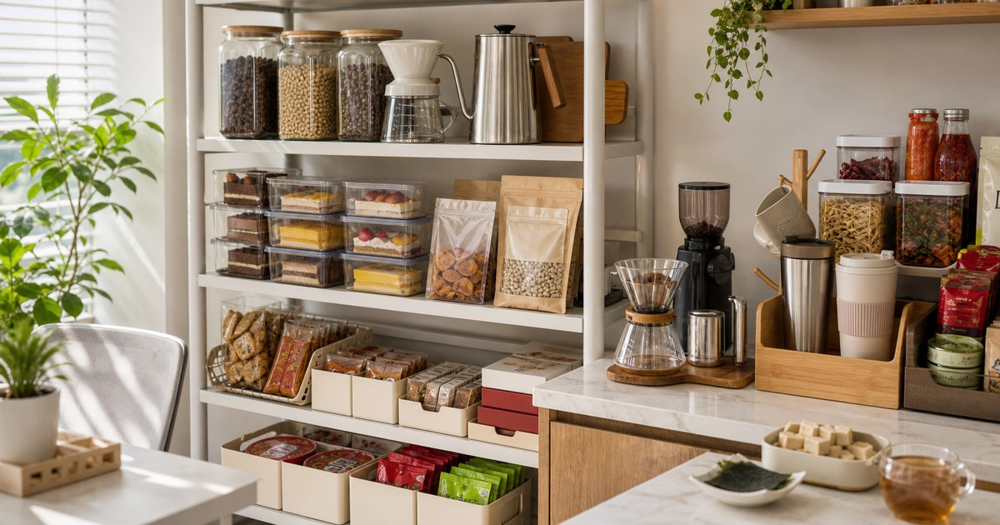

辦公室與家庭都能放的點心櫃：甜點、豆乾、咖啡與茶飲怎麼搭
點心櫃要好用，關鍵不是囤滿零食，而是把保存、分享、補貨與飲品搭配先分清楚。整理關係、財務、居家、工作與自我照顧的判斷順序，幫助讀者把日常重新放回可掌握的位置。並補充適合台灣日常的檢查重點與延伸閱讀，方便搜尋後快速掌握方向。

辦公室或家裡有一個點心櫃，看起來是小事，實際上很考驗秩序：甜點怕保存不當，豆乾需要留意開封，咖啡和茶飲也有不同的沖泡習慣。若只照喜好亂買，櫃子很快會變成過期、重複和沒人想吃的集合。
先把真正會發生的場景排出來
下午工作空檔、親友來訪、會議分享與週末追劇，是點心櫃最容易被打開的四個時刻。
先不要急著把甜點、豆乾、咖啡、茶飲一次買齊。比較穩的做法，是把一天或一次出門會經過的動作寫下來：拿取、使用、暫放、清潔、歸位。只要其中一段沒有位置，物件很快就會散落。
Elite Fashion 編輯團隊的判斷是：先用保存條件分層，再用分享頻率決定補貨量 這個順序能避免把預算花在照片裡好看、但生活中不會常用的品項上。
這一步也能幫你分辨哪些需求只是被照片提醒，哪些需求是真正在生活裡反覆發生。若某個物件找不到固定使用時刻，先把它留在收藏清單，比直接下單更不容易造成閒置。
預算有限時，先處理會造成卡關的用品，而不是先補最有新鮮感的用品。例如會影響出門、清潔、保存、照明、飲食或收納的環節，通常比裝飾型小物更值得優先確認。
- 先確認甜點的使用位置。
- 再看豆乾是否每天會用。
- 最後才補低頻或送禮型用品。
常用物要靠近手，不常用物要有邊界
常溫甜點、豆乾、沖泡飲與茶包要分層放，已開封品要比未開封備品更靠近手邊，避免一再重複開新的。
如果一件物品每週只用一次，它不需要佔據最順手的位置；如果每天都要用，就不該被壓在備品下面。甜點、豆乾、咖啡、茶飲的採買重點，是讓使用頻率和收納位置一致。
常見錯誤是只看口味豐富，卻忘了保存期限、開封後吃完速度、是否適合分享，以及飲品是否真的有人會沖。 下單前可以先看商品頁的尺寸、材質、適用範圍、保存方式和清潔限制，再決定它適合放在哪裡。
同一類用品也要分出正在使用、等待替換與偶爾才用三種狀態。很多家庭不是缺用品，而是不知道哪一件已經開封、哪一件只是備品；把狀態標出來，下一次補貨才不會重複買錯。
如果同一位置已經有兩件用途相近的物品，新的選項就要能解決明確問題：更好清、尺寸更合、標示更清楚、保存更容易，或更符合實際使用者的手感。否則它只是增加整理負擔。
- 常用品留在視線高度。
- 備品標示開封或補貨日期。
- 低頻用品集中，不分散在每個角落。
Elite 嚴選
品牌與店家只放在適合的情境裡比較
在生活中加點甜｜魏姐包心粉圓 和 德利豆乾 可以先從本篇核心情境查看，但不要把單一店家當成唯一答案。真正該比較的是用途、尺寸、材質、保存條件與退換規則。
在生活中加點甜｜魏姐包心粉圓、德利豆乾、豆韻、BOACUP 波卡、KoreaTop 韓物通、LING CHÁ 這些店家適合放在同主題選物中作為參考。本文不寫死價格、庫存、活動或商品規格，因為這些資訊都會變動，應以下單前商品頁公告為準。
若某個品項涉及身體、兒童、寵物、食品、車用或戶外安全，請把商品標示放在風格之前。看起來順眼只是第一步，能不能正確使用和維護才是長期留下來的原因。
比較時可以把商品分成三欄：每天會用、特定情境才用、送禮或備用。每天會用的品項要重視手感、清潔和替換成本；特定情境用品要看收納體積；送禮或備用品則要看標示清楚度和退換彈性。
也不要只看單一頁面的第一印象。至少交叉看商品名稱、店家說明、規格表、配送與退換規則；若這些資訊彼此不清楚，就算品牌或照片吸引人，也應該先降到候選名單，而不是立刻購買。
台灣生活裡最容易被忽略的是收尾
台灣夏季濕熱，點心、茶包與咖啡都要避開悶熱窗邊；公司茶水間若人多，也要把個人補給和共享品分開。
很多採買清單只寫出門前要準備什麼，卻沒有寫回家後要怎麼收。濕物、粉塵、食品、線材、玩具或開封用品如果沒有回收位置，下一次使用前就會重新混亂。
比較好的做法，是替每一類物件設一個結束動作：清潔、晾乾、補貨、充電、貼標或放回固定袋。這些收尾動作比買更多收納盒更能維持秩序。
若家中有多人共用，收尾規則要簡單到不用解釋也能照做。例如只用一個固定托盤、一個備品盒或一張補貨貼紙，就比複雜分類更容易被所有人維持。
季節轉換時也要重新看一次位置。夏天的濕氣、冬天的衣物體積、連假出遊前後的補貨量都不同；同一件用品在不同季節可能需要不同保存方式和拿取位置。
- 把回家後的第一個動作寫清楚。
- 需要清潔或晾乾的用品不要密封收起。
- 補貨訊號要比完全用完更早出現。
不適合的情境要先排除
食品與飲品請依個人飲食需求、過敏原、保存方式和商品標示選擇，本文不宣稱健康、控糖或體態效果。 如果商品頁標示和你的生活情境不一致，就算外觀、價格或評價吸引人，也應該先暫緩。
送禮或替家人採買時，請避免用自己的偏好替對方做完整決定。尺寸、氣味、材質、飲食、使用習慣和清潔意願，都會影響一件物品能不能被真正使用。
這也是這類選購整理的共同原則：不要把購物清單寫成標準答案，而是提供一套可以回到自家動線檢查的順序。
最值得保留的不是看起來最完整的清單，而是知道什麼情境不適合買。當家中空間、保存條件、使用者習慣或清潔能力還沒準備好，先少買一點，通常比買到後再勉強安排更划算。
若你是替家人、同事或寵物選購，也要預留被拒絕或不適合的可能。能退換、能轉送、能少量試用的品項，通常比一次買大容量或組合包更適合不確定的情境。
最後一輪確認：尺寸、保存、清潔與替換
每週看一次開封品、每月整理一次未開封備品，並把快到期品放到最前面，比一次買滿更不容易浪費。
下單前請回到商品頁確認甜點、豆乾、咖啡、茶飲的規格、材質、配送、保存和退換資訊。若資訊不足，先收藏或改找標示更清楚的品項，不需要急著一次買完。
也可以替這類用品留一張簡單備忘：買了什麼、放在哪裡、多久會用完、誰最常使用。下一次補貨時，這張備忘會比重新瀏覽一長串商品更可靠。
能長期留下來的物件，通常不是最吸睛的那一件，而是你知道放哪裡、怎麼清、何時補、誰會用的那一件。採買到這一步，才比較像真的替生活減少摩擦。
如果需要在兩個品項之間取捨，先選標示清楚、使用位置明確、維護方式簡單的那一個。它不一定最有話題，但最可能在日常裡真的被留下。
真正值得回購的品項，通常會留下三個訊號：用完前有人提醒、清潔或保存沒有造成麻煩、下一次遇到同樣情境時會自然想到它。若這三點都沒有發生，就把它視為一次經驗，而不是繼續囤貨的理由。
同主題品牌參考
FAQ
這份清單可以直接照單購買嗎？
不建議。請先依自己的空間、家庭成員、寵物狀況、出門路線或工作型態盤點，再回到商品頁確認規格與限制。
價格、活動或庫存可以以文章為準嗎？
不可以。價格、活動、庫存、規格、尺寸與配送條件都可能變動，請以下單前看到的 momo 商品頁或店家頁公告為準。
涉及兒童、寵物、食品、照護或運動用品時要注意什麼？
請優先看商品標示、適用對象、保存方式與專業建議。本文只提供一般生活整理與選購順序，不宣稱安全、健康、學習、營養或恢復效果。
下一步建議
先用先用保存條件分層，再用分享頻率決定補貨量的順序盤點，再回到商品頁確認規格、材質與使用限制。
重要警語
本文為一般點心、飲品與辦公室補貨整理參考，不構成營養、健康或個人化飲食建議；食品資訊請以商品頁與包裝標示為準。
本文含品牌／商品導購連結；若你透過部分商品連結前往選購，Elite Fashion 可能取得合作收益。本文仍以編輯判斷與使用情境整理為主，價格、規格、活動與庫存請以商品頁公告為準。